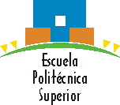

|
 |
|
|
Taller de Robótica Universidad Autónoma de Madrid - UAM 2006
Durante los dias 14, 15, 16, 17 y 20 de Febrero se va a impartir un taller de robótica básico en la Escuela Politécnica Superior de la Universidad Autónoma de Madrid.
Durante el taller cada alumno se construirá
el robot SKYBOT y aprenderá las nociones básicas de la robótica. El curso terminará con la realización de un concurso donde se pondrá en práctica los conocimientos aprendidos.
Las plazas disponibles para el taller son de 40 puestos, la gente se podrá apuntar formando grupos de hasta un máximo de tres personas por grupo.
Andrés Prieto-Moreno Torres, Ifara Tecnologías y profesor asociado en la EPS-UAM.
Iván González. Profesor ayudante en la Escuela Politécnica Superior de la Universidad Autónoma de Madrid (UAM)
Guillermo González de Rivera Peces. Profesor asociado en la Escuela Politécnica Superior de la Universidad Autónoma de Madrid (UAM)
Juan González. Profesor ayudante en la Escuela Politécnica Superior de la Universidad Autónoma de Madrid (UAM)
Iván Gracia Martínez. Miembro del Club de Robótica de la EPS-UAM.
Enrique Luis Barrera. Miembro del Club de Robótica de la EPS-UAM.
Ricardo Gómez González en la supervisión del concurso del mogollón
Extracto del cuaderno de bitácora del taller de la Campus Party 2005
Documentación del Taller
A Guillermo González de Rivera Peces por encargarse de coordinar y organizar toda la burocracia del taller incluyendo el tema créditos y subvención para los alumnos.
A Susana Holgado, Subdirectora de Estudiantes, por apoyar esta iniciativa desde el principio.
A cualquier persona que por olvido no haya mencionado pero que haya apoyado este curso.